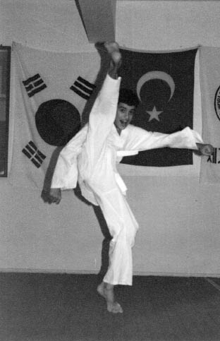

Merak kediyi öldürür deseler de kediyi öldüren merakın bana faydası oldu. Merakımın gelişmesinde en büyük etken ise “gerçek” bir çocukluk geçirmemdi. Bu, apartmanda, site içerisindeki çocuk parkında ya da kreşlerde geçen steril bir çocukluk değildi. Sokakta amaçsızca oradan oraya koşturup, mahallede ellerini bırakarak bisiklet kullanan ilk çocuk olduğuma sevindiğim, macera olsun diye kamyon arkalarına takıldığım, komşunun erik bahçesine dalarak hem heyecanı hem de korkuyu doyasıya yaşadığım, bisikletle toz toprak kaldıra kaldıra gezdiğim, düşe kalka geçen gerçek bir çocukluktu.
Bu dönem adeta benim evrenimin başlangıcını simgeleyen bir toz bulutuydu...
Ailem daha ben doğmadan Şanlıurfa’nın Siverek ilçesinden göç ederek İzmir’e yerleşmiş. Babamlar sekiz, annemler ise on üç kardeş. Kalabalık bir sülalemiz var. Daha doğrusu aşiret.
200 yıl önce büyük büyük dedem Siverek bölgesinde Kucak diye bir yere yerleşir. Bugün Bucak Aşireti’nin başındaki Sedat Bucak’ın büyük büyük dedesi de Hazro bölgesinden göç ederek buraya gelince tüm köyler birleştirilir, ismine de Bucak adı verilir. Yıllar içerisinde birbirlerine kız verip, birbirlerinden kız alan Bucak aşireti bu şekilde büyüyüp genişler. Büyüyen Bucak aşireti devletin de yardımıyla Siverek, Urfa ve çevresinde güvenliğin garantisi olur. PKK’nın en etkin olduğu yıllarda bile Siverek’te eylem yapılamamasını sağlar. Bucak aşireti Demokrat Parti zamanından başlayarak uzun süre TBMM’de bir milletvekiliyle temsil edilir.
Kalabalık bir aileden gelmenin en güzel yanı anlatacak ilginç anekdotların olması. Dinlediklerim arasında benim en çok ilgimi çeken ise dedem ile anneannemin evlilik macerası.
İzmir Enternasyonal Fuarı. Annem, babam ve ben (1982).
Belki de içerisinde bir tutam da olsa aykırılık ve olması gerekeni direten kuralcılara karşı bir tavır olduğu için bana böyle hissettiriyordur. Siz bazı şeylerin hayalini kurdukça, bu hayalleri gerçekleştirmeye çalıştıkça hep birileri çıkıp “O iş öyle olmaz” der. Bu insanlardan hep uzak durmak gerekir.
Dedem bir ağa oğludur. Anneannem ise bir bey kızı. Dedem, anneanneme âşık olur fakat ortada katı bir töre vardır. Törelere göre bir bey kızı asla bir ağanın evine gelin gidemez. Beyleri, o dönemlerde ağaların biraz daha aristokrat hali gibi görebiliriz. Bu töreye aldırmayan dedem, anneannemi istemeye gider. Zaten pek niyeti olmayan anneannemin babası, işi iyice yokuşa sürmek için o dönemde değeri birkaç köy eden çok kıymetli bir at ister. Ne de olsa bu atı getiremeyeceğinden emindir. Ama dedem beklenmedik bir şekilde atı getirir ve anneannemi alır. Sonrasında bu olayı sağır sultan bile duyar. Herkes “Nasıl olur da bir bey kızı, ağa oğluna varır?” diye garipser. Bir töre söylenenlere inat böylece çiğnenmiş olur.
Nedense onlarca yıl önce gerçekleşen bu gibi olayların genetik miras olarak bana kadar ulaştığına inanıyorum. Ebeveynlerimizin, atalarımızın aldığı kararların bizim çimentomuz olan özellikleri oluşturduğu kesin.
Olumlu, olumsuz devraldığım genetik mirasla çocukluğum hep merak ederek geçti. Çocukluğumun favori oyuncağı “takla atan araba” araştırmalarım da bu merakım yüzünden aralıksız sürdü.
Dedem Hacı Yıldız’ın hac yolculaması (1979).
Babama zor bela oyuncak aldırır; üç beş gün özenle kullandıktan sonra nasıl çalıştığını keşfetmek, modifiye etmek için içini açıp bozardım. Neyse ki ailem her seferinde o oyuncaktan uzun ikna çabalarım sonucu bana tekrar aldığı için bir şeyleri kıra boza öğrenmenin ne olduğuna aşinaydım. Bu merak evin elektronik eşyalarına yöneldiğinde ise aynı tavırlarla pek karşılaşmıyordum. Ayarları bozulmuş bir televizyon, pikap iğnesi kırılmış bir müzik seti merak çerçevesinde değerlendirilemiyordu.
Babam meslek lisesi torna tesviye bölümü mezunu olduğundan eli her çeşit cihazı tamir etmeye yatkındı. Hem ailede, hem de sülalede kimin elektronik ya da mekanik bir eşyası bozulsa babama getirir ya da misafirlikteyken bir bakmasını rica ederlerdi. Benim bu “takla atan araba” araştırmalarımın kıvılcımına onun bu cihazları tamir etme seremonisi sebep olmuş olabilir. Her ne kadar ben elektronik cihazlara daha meraklı olsam da babam alet çantasını alıp bir cihazı tamir etmeye başladığında meraklı gözlerle onu takip etmekten kendimi alamazdım. Bir kabloyu ya da tornavidayı tutmamı istediğinde ise hata yapmamaya çalışıp heyecandan daha fazla hata yapar, zaman zaman azarı işitirdim.
Zaman ilerleyip ortaokul yıllarım başladığında ise spesifik bir konuya ilgisi olmayan, sokakta vakit geçiren bir çocuk olmuştum. İlginç bir şekilde o yaşların favori sporları olan futbol ve basketbol gibi aktivitelere hiç ilgim yoktu. Onun yerine yüksek yerlerden atlayarak hiç durmadan birbirimizi kovalayıp, kaçtığımız garip oyunlar oynamayı tercih ediyordum. Bahçelere izinsiz girip erik topladığımız, bazı günleri erik günü ilan ederek okulu kırıp bütün günü bahçelerde geçirerek karnımız ağrır halde eve gittiğimiz zamanlar oluyordu.
Zaman zaman okul önünde satılan ve pek de hijyenik olmayan yiyeceklerden yediğim için karnımın ağrımasının, belki bu satırları yazmamı engelleyebileceğini hiç düşünmemiştim. Bir gece anormal bir karın ağrısıyla uyandım. Annem her ne kadar üzerime titreyip bir şeyler yapmaya çalışsa da ağrı bir türlü geçmiyordu. Üstelik koyduğu sıcak su torbası, habersiz şekilde patlayan apandisitimin zehirinin vücudumda daha hızlı yayılmasına sebep oluyordu. Babam içeriden “Bir şey olmaz, okul önündeki o pis yiyeceklerden yemiştir” diye bağırırken annem pes edip “Sen götürmüyorsan ben götürüyorum doktora!” dediğinde babam kalkıp beni hastaneye götürmüştü.
Doktorlar 15-20 dakika daha geciksek ölebileceğimi söylediğinde babamın yaşadığı şok, tıbbi konulara bakış açısını tümden değiştirmişti. Bu olay, 10 yıl boyunca babama her kızdığımda “Zaten senin yüzünden ölüyordum!” dememe sebep olacak ve babam ağzını açıp bu konuda tek bir kelime bile edemeyecekti. Ne kadar pozitif bir katkı olduğu tartışılır ama geçirdiğim apandisit ameliyatını bahane edip ortaokul yıllarım boyunca hiç beden eğitimi dersine de girmeyecektim.
Diğer yandan erik topladığımız bahçe sahipleriyle apartman sakinleri bir olup ufak çetemiz hakkında ailelerimize şikayette bulununcaya kadar halimizden çok memnunduk. Bu olaydan sonra fiziksel enerjimi daha sağlıklı boşaltabileceğim bir alan arayışına giren annem mahallemizdeki tekvando salonunu önerdi.
Apartmanın zemin katında, ayak kokusunun ucuz oda spreyiyle bastırılmaya çalışıldığı bir spor salonuydu. Mekân her ne kadar mütevazı olsa da hocamız gerçekten başarılı biriydi. Seyfullah Kim Do Man. Güney Kore’den Türkiye’ye gelmiş, burada evlenip çoluk çocuğa karışmış bir Koreliydi. Siyah kuşak 7. dan gibi o zaman Türkiye’de hayal olan, en yüksek kuşağa sahipti. Henüz yeşil kuşakken beni İzmir İl Şampiyonası’na sokup yarışmamı sağlamıştı. Karşımdaki siyah kuşaklı rakiplerimle çıktığım müsabakalardan rakibin havlu atarak çekildiği karşılaşmalar bile yaşamıştık.
İki kez İzmir ikincisi oldum ama yetmiyordu. Karşımdakilerin hepsi siyah kuşağa sahipken ben yeşil kuşakla çıkıp ikinci oluyordum. Kuşak üstünlüğünden maç kaybettiğim zamanlar da oluyordu.

Kim Doo Man Taekwondo İhtisas Spor Kulübü (1994).
Hocamızın ağır antrenman şartlarından şikâyet edenler olsa da o hep daha ağır antrenmanların olduğunu bize hatırlatırdı. Bu yüzden hepimizi toplayıp Koreli çocukların buz içinde yaptığı idmanları seyrettiriyordu. Eve gelip burkulan ayağıma sıcak suyla masaj yapıp yorgunluktan külçe gibi yatmak artık bir rutin olmuştu.
Yaptığım yıllarda tekvando sporunun bana katkılarını inkâr edemem. Disiplin, sabır, sınırları zorlamak, hep o dönemlerde, daha 12-13 yaşındayken karşılaştığım şeylerdi. Hocamın hırsımdan ötürü ümitlenip “Seni Avrupa, dünya şampiyonu yapacağım, göreceksin” demesi benim gibi o yaşlarda hiçbir alana ilgisi olmayan başıboş bir çocuğu bu spora daha da çok bağlamıştı.
O zamanlar tekvandonun stiline en yakın, bacaklarını çok iyi kullanan film yıldızı Van Damme hayranıydım. Öyle ki kendisine bir mektup bile yazmıştım.
Seyfullah Kim Doo Man ve ben (1994).
Ortaokul yıllarıma damga vurmuş sarışın, uzun boylu İngilizce öğretmenimden, yazdığım Türkçe mektubu İngilizceye çevirmesini rica etmiş, nereden nasıl bulduğumu hatırlamadığım Van Damme’ın adresine gönderip, imzalı fotoğraf istemiştim.
Birkaç hafta sonra adresime imzalı fotoğraf gönderildiğinde çerçeveletip, duvarıma, madalyalarımın yanına astım. Tarif edilemez bir heyecandı benim için.
Motivasyonum üst seviyede, her şey bu kadar iyi giderken hiç de şaşılmayacak bir gelişme yaşandı. Yaşamımla ilgili yaptığım değerlendirmelerde hiç yeri olmayan okul hayatım yine karşıma çıkmıştı. Hiçbir zaman derslerde başarılı bir öğrenci olmadım. Ama o sıralar okula karşı fazladan bir ilgisizliğim vardı. Yıl sonunda karnemde altı zayıf gören babam, çekmecemde duran Uzakdoğu sporlarıyla ilgili tüm dergileri yırtıp parçalamış ve beni tekvando salonuna bir daha göndermemeye karar vermişti. Günlerce ağlayıp sızlansam da bu pek bir şeyi değiştirmedi. En sevdiği oyuncağı elinden alınan çocuktum artık. Üstelik babamın bu acımasız ambargosu, ertesi gün mavi kırmızı kuşağa geçeceğim sınav öncesine denk gelmişti. Bu travmayı aşağı yukarı 10 yıl üzerimden atamadım. Normal zamanlarda aklıma gelmese de belli aralıklarla rüyamda kendimi hep bir tekvando salonunda görürdüm.
Annem her zamanki derleyip toplayıcı tavrıyla yaşadığım travmanın farkındaydı. Beni okulla barıştırmak, okulda keyifli vakit geçirebilmemi sağlamak için babama okulda bir bilgisayar kursu açıldığını ve beni bu kursa göndererek hiç olmazsa belli bir konuya ilgimin ortaya çıkabileceğini söyledi. Babamın kabul etmesiyle beraber biraz isteksiz de olsa bilgisayar kursuna gitmeye başladım.
Başlarda ders gibi sıkıcı bir şeymiş gibi göründü bilgisayar kursu. Bilgisayarlarımız o zamanın favorisi 286 serisiydi. Odaya ilk girişimde bu kadar bilgisayarı bir arada görmekten fazlasıyla etkilendiğimi hatırlıyorum. Bana dünyanın yönetildiği bir yerden bahsetseniz herhalde “Orası böyle görünüyordur” derdim. Epey bir süre önümüzde bilgisayarlarla, teorik olarak bilgisayarın işlevini ve diğer temel konuları gördük. Ama hâlâ bilgisayarın açma kapama düğmesine bile basmamıştık. Zaman ilerledikçe acı gerçekle yüzleşmek zorunda kaldım. Bilgisayar kursundaki bilgisayarlar çalışmıyordu. Çalışmayan bilgisayarların klavyelerini önümüze koyup “Haydi bakalım çocuklar, elleriniz alışsın” diyerek bize klavyenin tuşlarına basarak vakit geçirmemizi söylüyorlardı. Durum böyle olsa da bilgisayarla olan o ilk “tensel” temas beni fazlasıyla etkilemişti.